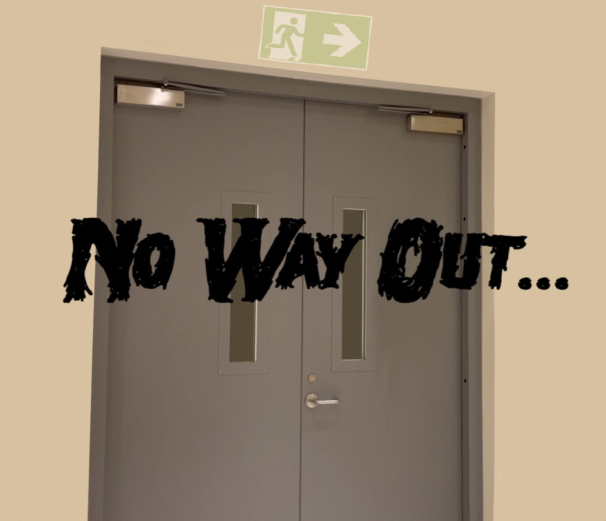

This website is designed around the short film's ominous atmosphere and looping narrative. When my group decided to build the story of our film around repetition with subtle changes, I immediately thought of the unsettling environments in games like The Backrooms and Exit 8, where familiar spaces slowly become disorienting and escape never feels guaranteed. That inspiration influenced the eerie feel of the site, including its structure and comic-style scroll, and captions that feel more like observations than explanations. The homepage presents fragments of the loop as still moments, which allows users to recognize patterns and differences without fully revealing the complete experience. By the time the video appears, the audience has already formed a partial understanding of the hallway, but the film provides clarity about the story that the images cannot. I wanted the website to feel almost like a guide through the space that gradually becomes more uncertain, reflecting the main character’s growing awareness that the environment is changing around him. The language I used follows the idea of searching for an exit, creating an immersive experience where the user, like the character, is witnessing a loop that looks familiar but never resolves in the same way twice.
Actors: Ruslan Bashokov, Mohammed Alkhatib, Daria Lobanova
Camera Operator: Mariam Aljunaibi
Location: NYUAD Arts Center
This looks familiar.